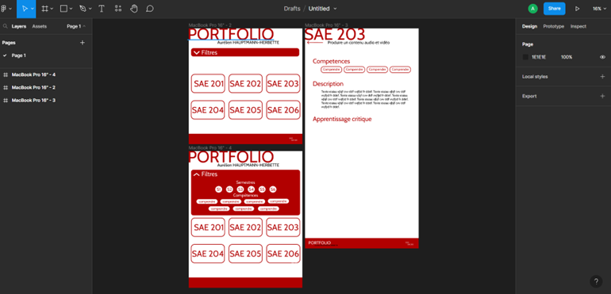
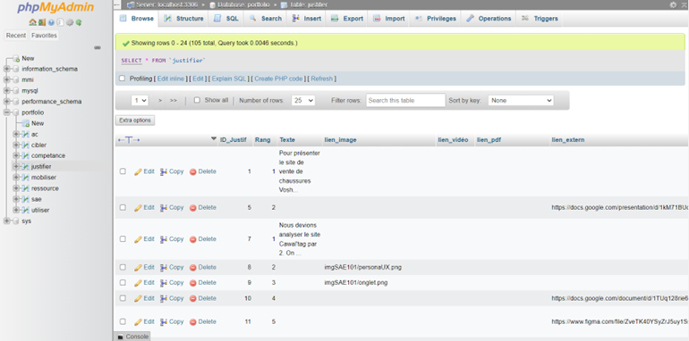
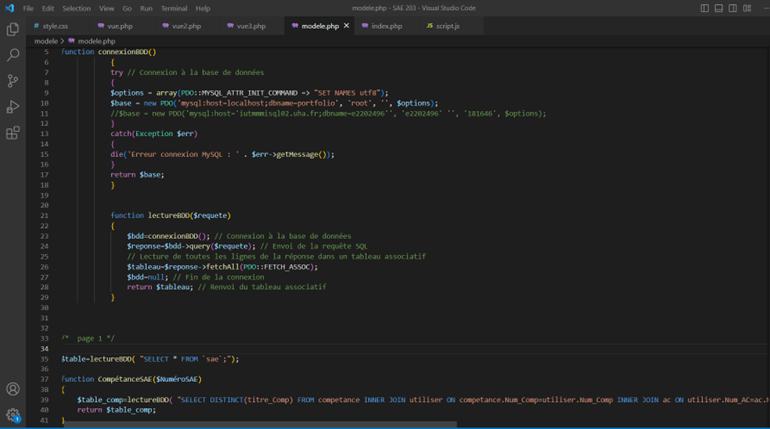
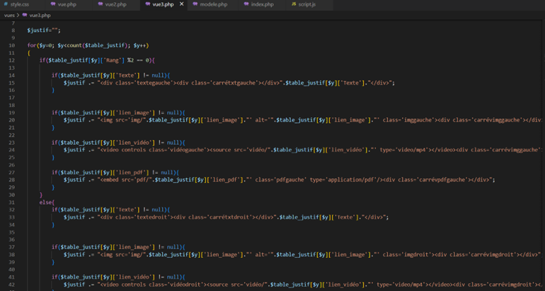

Site | Répertoire des projets de formation 2023
Description
Dans le cadre de la formation en BUT MMI, nous devions créer un site qui répertorie tous les projets de l’année. Le site doit être pourvu d'interactions simples et fonctionner grâce à une base de données. De plus le site doit fonctionner avec le motif MVC (Modèle, Vue, Contrôleur).
Pour créer ce site, j’ai d’abord imaginé le design, sur Figma, de façon à ce qu’il soit beau et pratique. J’ai ensuite commencé à coder le site en HTML, en Css et en Javascript, en ajoutant des interactions telles que des changements de couleurs lorsque l’on passe la souris par-dessus un bouton.


Une fois le design codé, j’ai commencé à réfléchir à comment structurer la base de données qui regroupe tous les projets avec les titres, les descriptions, le contenu de chacune, etc. J’ai donc fait un MCD (Modèle Conceptuel de Données), où j’ai regroupé toutes les données allais ensemble par table. Pour chaque table j’ai choisi une donnée qui sera la clef primaire, qui permet d’identifier l'occurrence de la table (si c’est le projet 1 ou le projet 2, etc.). J’ai ensuite lié les différentes tables entre elles et ajouté les cardinalités. J’ai par la suite mis le MCD sous forme de MLD (Modèle Logique de Données) et créé la base de données sur PhpMyAdmin vis à Laragon.
Après j’ai préparé les fichiers pour le MVC (Modèle, Vue, Contrôleur) avec un fichier modèle Php, sur lequel on se connecte à la base de données et on envoie les requêtes SQL pour récupérer les éléments désirés, des fichiers vues Php qui sont les différentes disposition des éléments de chaque page, et un fichier contrôleur Php affiche les éléments et la vue qui correspond à la page demandée.


Les éléments affichés dans la page AC / Justification sont disposés une fois à gauche, une fois à droite. Pour cela j’ai ajouté dans la table “justification” l'attribut “rang” qui correspond au rang de la “justification” dans la page. Si le rang est pair l’élément est affiché à gauche, s’il est impair l’élément est affiché à droite.
Outils utilisés pour ce projet
Visual Studio Code
Laragon
Github